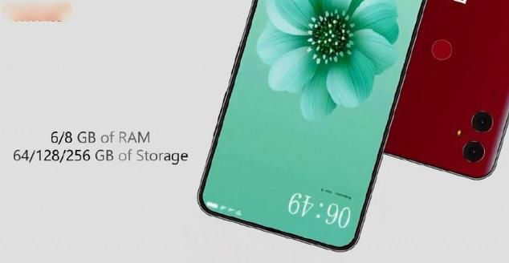
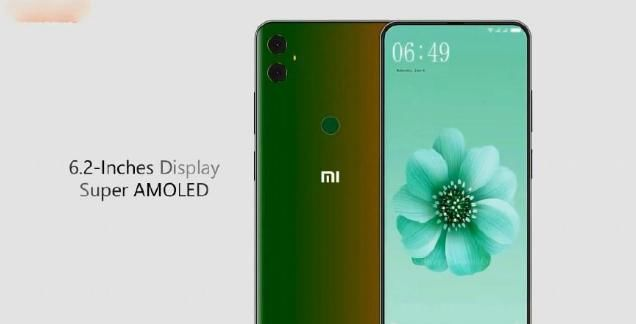
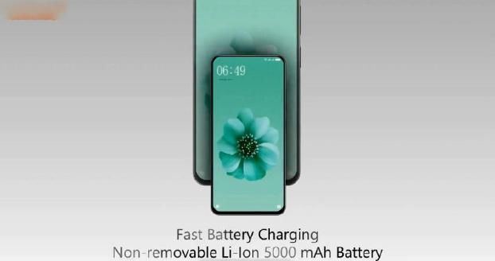

前几天，外国一名数码爱好者曝光了红米 note7设计照片，配置非常强大，而且外观也有了实质性的改进。
小米系列一直都是属于旗舰基级别，而红米note系列主要针对的是普通消费用户，从曝光的照片中可以看出红米 Note7会配备6.2 寸以及三星AMOLED屏，比例为19.5:9，采用Corning Gorilla第六代玻璃设计，具有3D触控功能，屏幕边框设计极为狭窄，屏幕比例将高达98%。
而小米旗舰类手机都很少使用三星屏幕，为什么低端的红米 note7使用此屏幕呢?估计现在它且是一台概念机吧，未来大规模生产将还是会被国产屏所取代，毕竟成本需要较便宜些。
红米 note7搭载的处理器也像配置的屏幕一样强大，使用的是骁龙 710芯片，目前拥有这款芯片的手机市场上很少，而小米 8se版本就是其中一，不知道为什么红米note系列为何会使用这么高端的芯片，让人有点难以相信。
这款手机在内存方面也十分给力，6/8G运行内存，64/128/256G存储空间这在红米系列中是前所未有的，这样的内存组合算是主流中高端级别了，不会是雷总想要用红米 note7会改变原来的低端机情况，向中高端发起进攻?